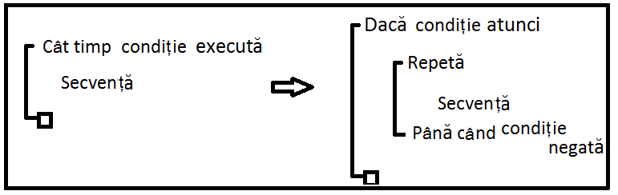
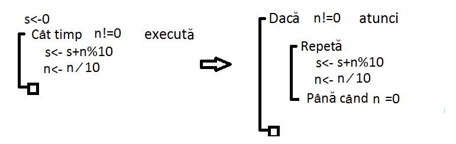
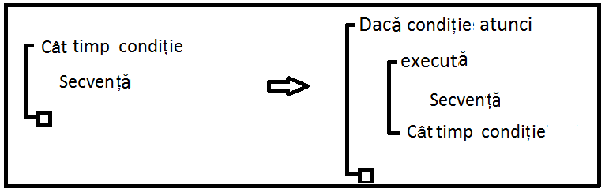
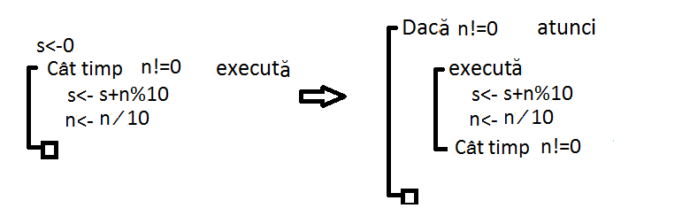
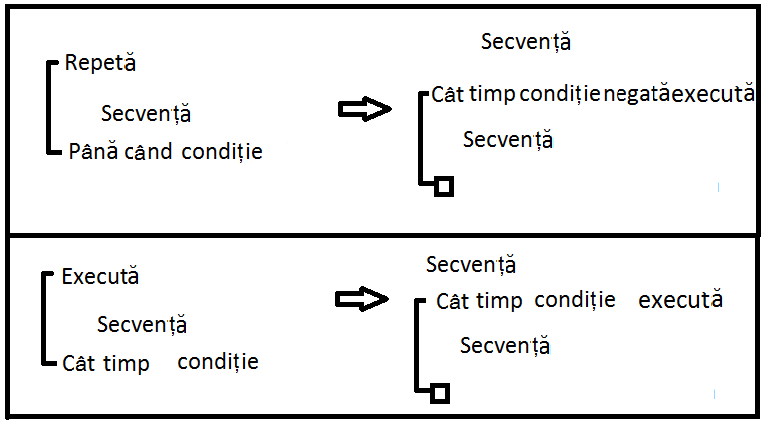
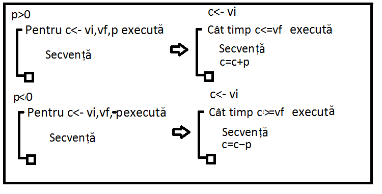
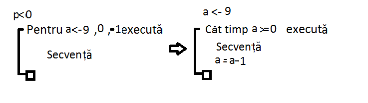

a)Transformarea structurii cu test inițial in structura cu test final:

Deoarece structura cu test inițial nu execută secvența cȃnd condiția este falsă de la ȋnceput, este necesară testarea condiției suplimentar ȋnainte de a scrie structura cu test final.
La transcrierea cu structura “repetă” trebuie să avem %#523;n grijă să negăm condiția.



b)Transformarea structurii cu test final ȋn structură cu test inițial:

Deoarece structura cu test final execută secvența cel puțin o dată, este necesară scrierea ei o dată in plus ȋnainte de a scrie structura cu test inițial.
In transcrierea lui “repetă…pȃnă cȃnd” trebuie să avem grijă să negăm condiția.
c)Din structura cu contor (pentru) ȋn structura cu test inițial:

